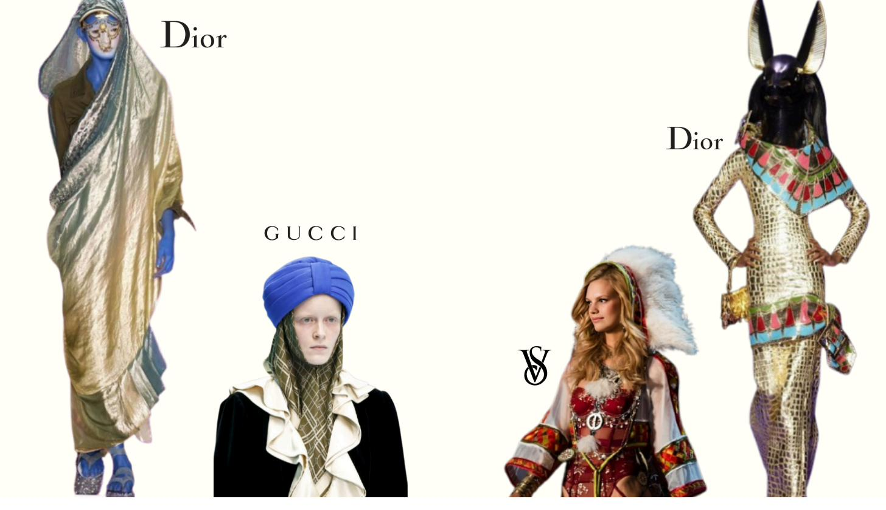
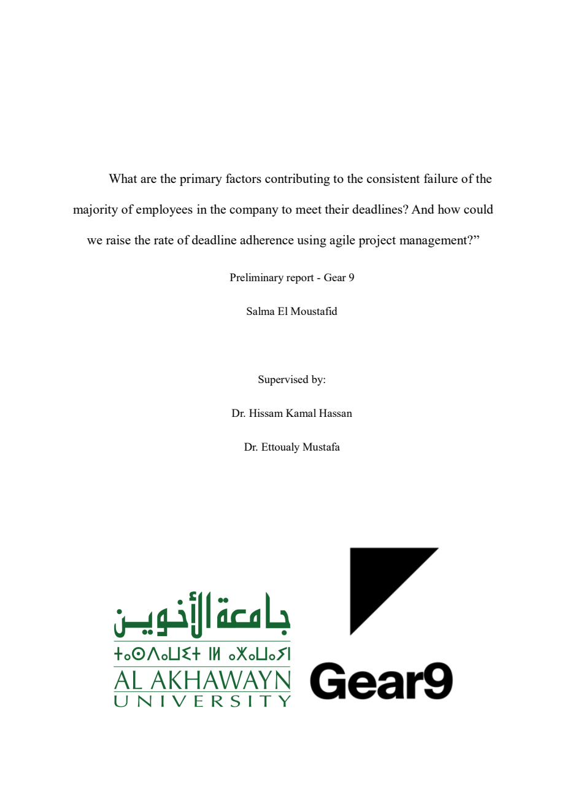
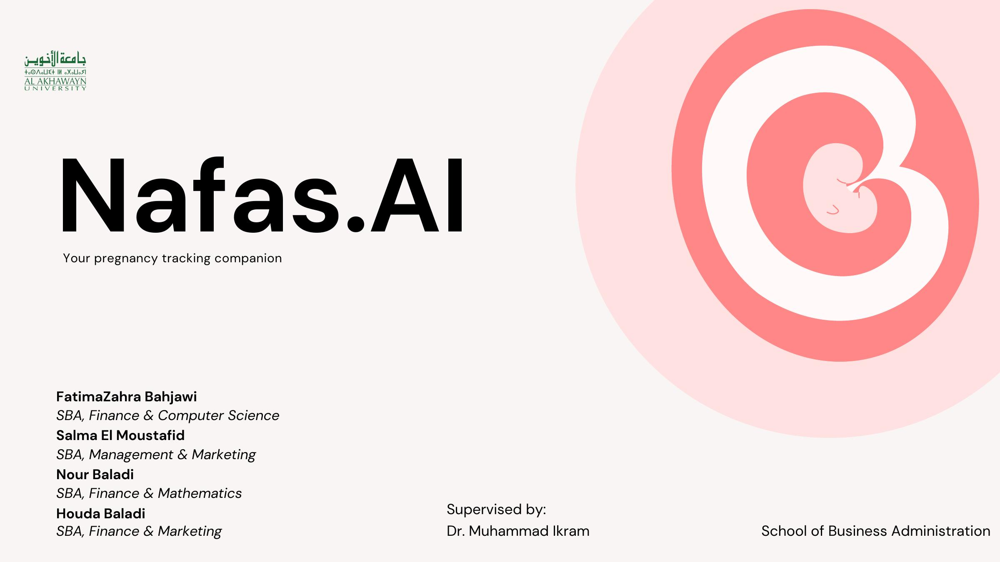
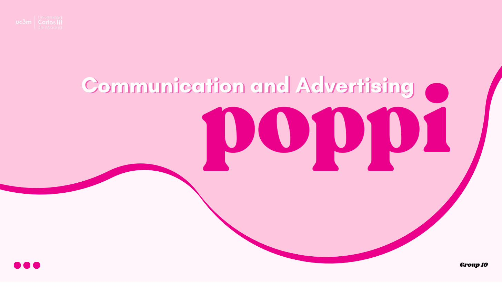
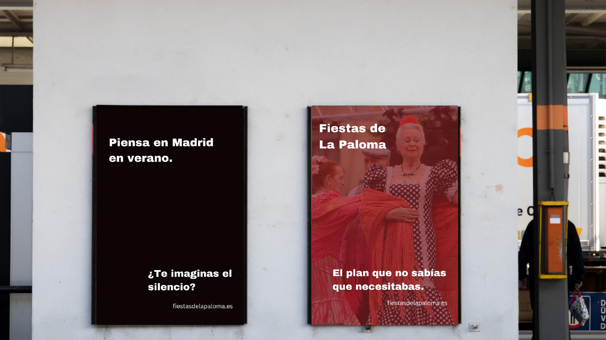
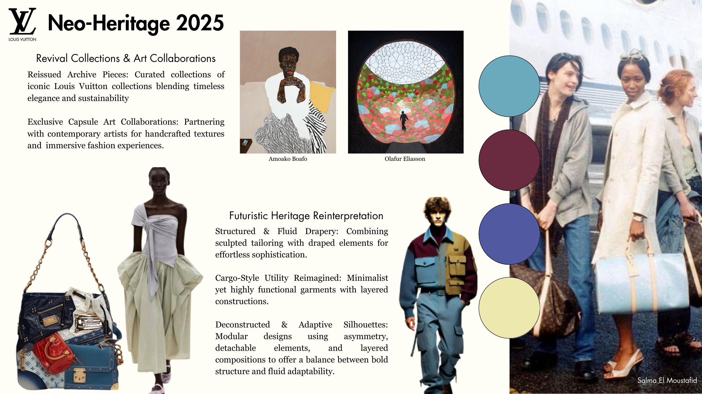

Click any project to see the work.

How cultural symbolism in fashion branding affects Gen Z brand perception. Mixed-methods, 200+ participants.

Sprint performance analysis across two live client projects. Original KPI frameworks built from scratch.

AI-powered maternal healthcare app for Morocco. Full business plan, MVP design in Figma, GPT-3.5 chatbot.

Full advertising and communication strategy for Poppi prebiotic soda targeting Gen Z consumers.

OOH and digital campaign for Madrid's iconic summer festival. Bilingual messaging for locals and tourists.

Luxury fashion trend analysis covering revival collections, art collaborations, sustainability, and phygital retail.